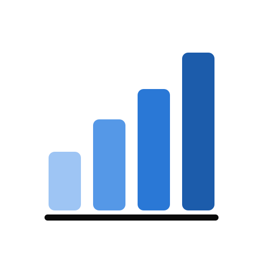

YERALTIOyuncu istatistikleri
📲 Uygulama olarak eklemek için Safari'de Paylaş düğmesine, sonra Ana Ekrana Ekle'ye dokun.
🌍 Oyunu oynayan toplam kişi
…
Her cihaz bir kez sayılır
Bu ay
…
Geçen ay
…
En çok oynanan ay
…
Aylara göre oyuncu sayısı
Aylık tablo
| Ay | Oyuncu | Önceki aya göre |
|---|
Yükleniyor…